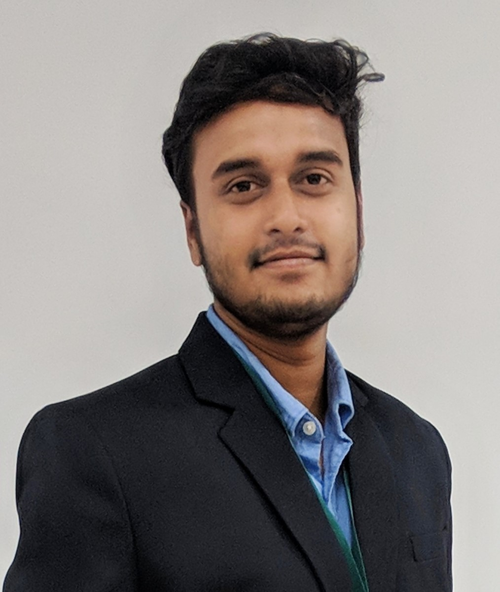

Dinesh Kushwah
SYSTEM ENGINEER, TATA CONSULTANCY SERVICES(AUG 2016 – PRESENT)
Work role:
-
Working for Client ABN AMRO bank, based in Amsterdam. • Handling
environment/application/Infra related issues for 130 Web portals of
pre-production of testing environment.
-
Acting as a gateway for Application/Infra Change approvals to ensure
higher test environment availability.
-
Provide DBA support of DB2 and IMS databases at backend. • Also
responsible for batch management and Monitoring MSU consumption of jobs
/threads in Mainframe.
-
Handling data refresh of customer data so that new data will be provided
to lower environment for testing. • Know coding knowledge on React and
JavaScript.
Tranings:
-
Application oriented JAVA J2SE & J2EE by Programmers Point, Indore.
-
Hybrid Mobile Application Development by Innovative Business Solutions,
Bhopal.
Skills:
-
Java, JavaScript, Mainframe(COBOL, JCL), C++, HTML, CSS. • DB2, IMS,
MySQL.
-
Mainframe z-OS, Service now, GitHub, Confluence, Azure Board, JIRA,
Visual Studio Code, PUTTY, Eclipse and UCD.
Personal Skills:
- Adopt new learning
- Self-Initiative.
- Positive attitude.
Certifications:
- Az-900, Microsoft Azure Fundamentals.
- Microsoft Technology Associate: Database Fundamentals.
- Microsoft Certified Professional.
Education:
-
BACHELOR OF ENGINNERING • 2016 • RAJIV GANDHI PROUDYOGIKI
VISHWAVIDYALAYA 80.75% in Computer Science from IES IPS Academy, Indore.
-
12TH • 2012 •CBSE BOARD. COUSE - PCM. 77.8% from Little Angels H.S.
School, Mhow, Indore.
-
10TH • 2010 •CBSE BOARD. 77.9% from Little Angels H.S. School, Mhow,
Indore.
Achievements & extra activities:
- Awarded by Academic toper of a college(2015).
-
12TH • 2012 •CBSE BOARD. COUSE - PCM. 77.8% from Little Angels H.S.
School, Mhow, Indore.